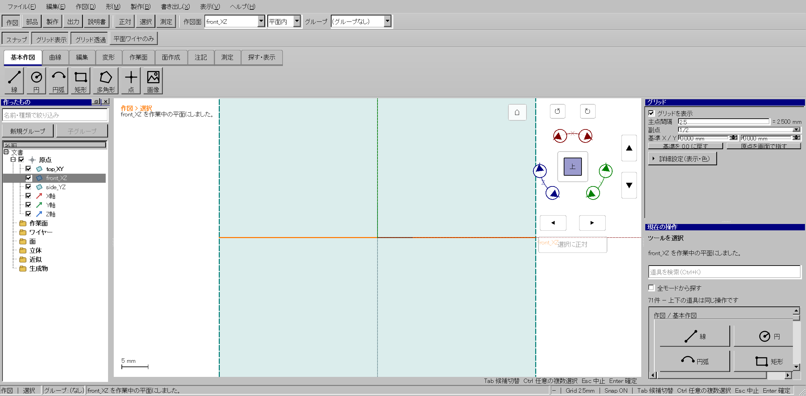
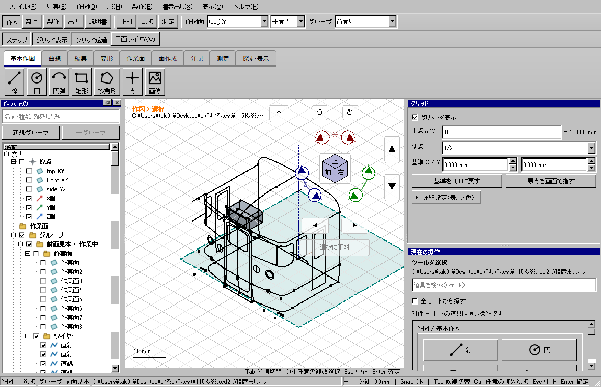

グリッド常設・読み込みと描画の重複処理削減
面取り線の重複と部分削除の修正
2026-10-23 / kachakachaCAD / 開発ブランチ codex/v2-wp01-build-scaffold
Windows全体検証・配布版検証・通常起動に成功。ソース 18ba0c2c6。検証済みEXE / 配布フォルダー out/releases/grid-wire-verified-20261023。
利用者の操作はどう変わるか
| 項目 | これまでの問題 | 変更後 |
|---|
| グリッド設定 | ツールの設定ページと切り替えるので隠れる。 | 右上に表示・主点間隔・副点・基準X/Yを常設。現在の操作はその下に残す。表示や色の詳細だけ折り畳む。非表示ページの高さでウィンドウ全体が膨らまないようにし、各ツール内でスクロールする。 |
| 入力とツール | グリッドへのEnter/Escが実行中ツールへ届き得る。外部の作業面変更後に古い原点を適用する可能性もある。 | 入力キーの受け持ちを分離。作業面・原点変更に追従し、入力中の式と精密な原点座標を表示同期で失わない。 |
| C/R加工 | 結果から加工前線への不要な依存により、旧線が非表示で残り、加工回数ごとに増える。 | 独立した結果には消費元への不要な参照を付けず、参照されていない元線を結果に置換。一回のUndoで戻せる。 |
| Rや隣接直線の削除 | ワイヤー全体の選択が残ると、右クリック位置のRではなく全体を削除する。 | 「この線分だけを削除」を追加。C/R中も全体選択から単一辺へ絞れる。重なり候補の強調と削除対象を一致させる。 |
実際の設定欄
自動試験がWindowsの実ウィンドウに対して入力した画面。生成イラストではない。倍率150％。共通欄がスクロールなしで表示できることも検査する。

間隔欄は 25.4/8 のような式をEnterで適用できる。Rを消すにはR上を右クリックし「この線分だけを削除」。通常の選択ツールでRを選んでDeleteでもよい。ワイヤー全体の削除は左ペインや全体選択の操作として残す。
処理の変更
| 場所 | 修正前 | 修正後 |
|---|
| 表示設定 | 表示のみの変更でも場面を複製・差し替えし、輪郭検出等を起動。 | 表示のみ／同じ設定なら場面を差し替えない。同じ色では面の表示色も再構築しない。 |
| グリッド描画 | 静止画面のホバーや再描画でも投影とクリッピングを繰り返す。 | 行列・画面寸法・作業面・原点・間隔・副点が同じなら投影済み線を再利用。変更時は作り直す。 |
| 文書転送 | キャッシュ読込後に同じ全データを再符号化。冷読込も転送用とキャッシュ用に二度符号化。 | 全フィールドの検査を維持し、準備済みペイロードをブロックコピー。転送識別子だけ更新。SHA、サイズ、実行ファイル識別、元文書バイト列の検査は維持。 |
| 参照検索 | 形状復元と平面ワイヤーフィルターで、要素ごとに文書配列を線形検索。 | 同じ更新内でUUID索引を一度作成し再利用。 |
同じPCでの読み込み計測
同一の原本・Windows描画・構成で、それぞれ専用の一時フォルダーと文書キャッシュを使い逐次実行。各バイナリ・モデルにつき冷／温一組の計測。選択された試験が実際に1件実行され、失敗0・元ファイルのSHA不変であることを照合した。
| モデル | 版 | 初回（キャッシュなし） | 再読込（キャッシュあり） |
|---|
| 実モデル（115投影） | 修正前 | 4.221 秒 | 0.725 秒 |
| 実モデル（115投影） | 最終候補 | 4.532 秒 | 0.720 秒 |
| 大規模モデル（1085形状） | 修正前 | 22.631 秒 | 6.974 秒 |
| 大規模モデル（1085形状） | 最終候補 | 22.970 秒 | 7.130 秒 |
最終候補の大規模モデル再読込は6.974→7.130秒で、この一組では全体の高速化を確認できていない。初回も改善していない。キャッシュからの転送準備は約604→0.6msに短縮したが、全読込には検証・BRep復元・メッシュ作成・描画等が含まれるため、部分処理の短縮と全体時間を区別する。画面全体の60fpsや全演算の速度向上を達成したという結果ではない。グリッド投影の再利用は同じフレームの再描画で再計算回数が増えず、設定変更後の画像が新規投影と完全一致することを別試験で確認した。
参考として初期候補の左ペイン操作中央値も記録した。大規模モデルの選択16.78→17.45ms、表示切替69.19→74.05msであり、ここで速度向上は確認できていない。これは最終候補の読み込み計測とは別の候補・一組の測定で、恒常的な悪化／改善の断定には使わない。常設欄によるビューポート寸法の変化も条件に含む。
試験と証拠
Windows全体ゲート grid-wire-verified-20261023 成功。CTest 195件（skip 0）、開発版UI 560件、配布版UI 560件、旧アプリ自己試験がすべて成功。2026-10-23 03:50:10～04:16:16 JST（約26分6秒）。重点検証を完成版扱いしていない。
倍率150％、Windowsソフトウェア描画、offscreenは各7件成功。途中に失敗した画面条件4件・追加3件も同じ条件で成功後に全体を実行した。
配布フォルダーから実モデルを通常起動し、visible/exposed/on_screen/event_loop/rendered/readyとWindowsプラットフォームを確認。原本SHA不変。アプリは開いたままにした。

- C/Rの連続加工、全表示、Undo/Redo、保存・再読込で変更後線だけが残ること。
- Qtのマウスイベント経路からRへの絞込み、Deleteキーイベント、右クリックからR／直線だけの削除、重なり候補の強調と削除対象一致。
- 参照寸法・駆動寸法と、他の生成物が使用する元線の保護。
- 全モードのグリッド常設、作図途中のEnter/Esc分離、不完全な式、作業面変更、表示切替と吸着・履歴の独立。
- 転送トークン不一致、切断、複数ブロックのコピー途中取消、SHAが一致していても不正なフィールド、破損キャッシュからの元文書再構築。
- Windowsで倍率150％、ソフトウェア描画も各7件成功。縮小ウィンドウでも高さ700に収まり、共通グリッド欄が操作可能であることを検査。
前候補の全体ゲートは3回中止した。1回目はレビューで見つかった候補表示と寸法参照、2回目は全560件の配布版UI試験が検出した4件（古い設定案内・同値適用の期待、縦に膨らむレイアウト、画面比率に依存した試験）の修正のためである。3回目は小さい画面の視点ボタンに試験用の作図位置が重なる問題と、折返しラベルの高さ不足が検出されたためである。対象選択の長い名前で確定・取消が隠れないよう、入力部分をスクロール化して操作欄を固定した。成功扱いせず記録を保全。中止後の残存ロックで開始できなかった入口1回も失敗として記録し、所有PID停止を確認してロックのみ解除した。修正後、上記の最終候補で全体ゲートに成功した。試験削除・許容誤差緩和による高速化はしていない。
ファイル構成と残る範囲
常設UIは既存の V2GridDock を独立Dockとして再利用し、操作ページの複製は作らない。投影キャッシュはビューポート専用、転送コピーは V2PreparedDocument と V2DocumentCache の内部。C/R加工と部分選択の処理はUI境界内に保ち、コアAPIとKCD保存形式は変更していない。関数の責務に合わせ、選択トグル判定を入力ファイルから選択状態を扱う実装側へ移した。削除したソースファイルはない。旧配布・原本・バックアップ・他担当の変更は保全した。
既存文書に過去の操作で蓄積した非表示の線を無条件には削除しない。新しい加工でも、寸法や他の生成物が参照する元線は非表示で保護する。重い初回再構築、BRep復元、表示メッシュ作成、重い幾何演算自体は引き続き改善対象。
結果JSON · 計測CSV
測定時間は壁時計。複数担当の作業時間を合算して利用者の待ち時間とはしていない。サブ担当は読み取り専用の監査で、ビルド・試験・アプリ操作は主担当が逐次管理した。